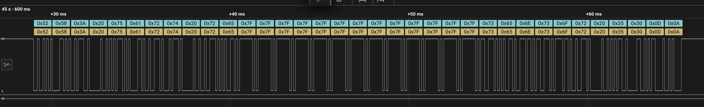

Generated by docs/tools/generate-module-html.mjs. Edit README.md, then run the generator to refresh this page.
4-UartTxRx - Bare-Metal USART2 Transmit And Receive
This project extends the USART2 transmit example into a simple blocking UART RX/TX application. The firmware prints a ready message, waits for text from the host computer, then echoes the received line back with an RX: prefix.
Target
Board: NUCLEO-F091RC
MCU: STM32F091RCTx
Core: Arm Cortex-M0
UART: USART2
TX: PA2
RX: PA3
Baud: 9600
Frame: 8 data bits, no parity, 1 stop bit
Logic: 3.3 V, non-inverted UART, idle highProject Structure
4-UartTxRx/
Inc/
uart.h
Src/
main.c
syscalls.c
sysmem.c
uart.c
Startup/
startup_stm32f091rctx.s
STM32F091RCTX_FLASH.ldCMSIS headers are stored in the shared repository folder:
chip_headers/CMSIS/Device/ST/STM32F0xx/Include
chip_headers/CMSIS/IncludeSTM32CubeIDE Import
For the full STM32CubeIDE v1.13-to-v2.2.0 import flow with screenshots, see the root repository README section:
Import Old Projects Into STM32CubeIDE 2.2.0File > Import... > General > Existing Projects into Workspace
Import both:
4-UartTxRx
chip_headers
Required Compiler Include Paths
Configure the real compiler include paths under C/C++ Build:
Right-click 4-UartTxRx
Properties
C/C++ Build
Settings
Tool Settings
MCU/MPU GCC Compiler
Include paths
Use:
Configuration: All configurationsAdd:
../Inc
${workspace_loc:/chip_headers/CMSIS/Device/ST/STM32F0xx/Include}
${workspace_loc:/chip_headers/CMSIS/Include}
Required Compiler Symbols
Configure symbols under:
Right-click 4-UartTxRx
Properties
C/C++ Build
Settings
Tool Settings
MCU/MPU GCC Compiler
PreprocessorThis screenshot shows the correct page. If only STM32F091RCTx exists, add STM32F091xC as shown in the list below.

Add:
STM32
STM32F0
STM32F091RCTx
STM32F091xC
NUCLEO_F091RC
STM32F091xC is the important CMSIS macro. STM32F091RC is not the device-selection macro used by stm32f0xx.h.
Build And Flash
Project > Clean...
Right-click 4-UartTxRx > Build Project
Right-click 4-UartTxRx > Debug As > STM32 Cortex-M C/C++ Application


Recommended debug settings:
Application: Debug/4-UartTxRx.elf
Interface: SWD
Reset mode: Connect under reset
SWV: DisabledCode Walkthrough
main.c initializes USART2, prints a startup message, waits for a line from the terminal, then echoes it back:
int main(void)
{
char rx_buffer[32];
uart_tx_rx_init();
uart_transmit("UART TX/RX ready\r\n");
uart_transmit("Type text and press Enter:\r\n");
while (1)
{
uart_read_line(rx_buffer, sizeof(rx_buffer));
uart_transmit("RX: ");
uart_transmit(rx_buffer);
uart_transmit("\r\n");
}
}USART2 TX/RX initialization configures PA2 and PA3 as alternate function 1:
GPIOA->MODER &= ~((3U << (2U * 2U)) | (3U << (2U * 3U)));
GPIOA->MODER |= ((2U << (2U * 2U)) | (2U << (2U * 3U)));
GPIOA->AFR[0] &= ~((0xFU << (4U * 2U)) | (0xFU << (4U * 3U)));
GPIOA->AFR[0] |= ((1U << (4U * 2U)) | (1U << (4U * 3U)));USART2 is configured for 9600 baud and both transmitter and receiver are enabled:
RCC->APB1ENR |= UART2EN;
USART2->CR1 &= ~USART_CR1_UE;
USART2->BRR = compute_uart_bd(APB1_CLK, UART_BAUDRATE);
USART2->CR1 = USART_CR1_TE | USART_CR1_RE;
USART2->CR2 = 0U;
USART2->CR3 = 0U;
USART2->CR1 |= USART_CR1_UE;String transmit sends one byte at a time until the null terminator:
void uart_transmit(const char *send)
{
while (*send != '\0')
{
uart_write_byte((uint8_t)*send);
send++;
}
}Byte receive waits until the RX data register is not empty, then reads RDR:
uint8_t uart_read_byte(void)
{
while (!uart_data_available()) {}
return (uint8_t)(USART2->RDR & 0xFFU);
}Line receive stores characters until Enter is pressed or the buffer is full:
void uart_read_line(char *buffer, uint32_t length)
{
uint32_t index = 0U;
if (length == 0U)
{
return;
}
while (index < (length - 1U))
{
char received = (char)uart_read_byte();
if ((received == '\r') || (received == '\n'))
{
break;
}
buffer[index] = received;
index++;
}
buffer[index] = '\0';
}Terminal Test
Connect the Nucleo board through the ST-LINK USB connector. On macOS, find the serial port:
/bin/ls /dev/cu.usbmodem*Open the port:
screen /dev/cu.usbmodem212403 9600Use your actual /dev/cu.usbmodem* name.
Expected startup text:
UART TX/RX ready
Type text and press Enter:Type:
helloExpected echo:
RX: hello
Exit screen:
Ctrl-A
K
YLogic Analyzer Test
Connect:
Analyzer GND -> Nucleo GND
Analyzer D0 -> PA2 / USART2_TX
Analyzer D1 -> PA3 / USART2_RXDecoder settings:
Analyzer: Async Serial
Bit rate: 9600
Data bits: 8
Parity: None
Stop bits: 1
Bit order: LSB first
Signal: Non-inverted
Idle level: High
Sample rate: 1 MS/s minimum, 5-10 MS/s recommended
Logic voltage: 3.3 VWhen the board prints the prompt, activity appears on TX. When you type into the terminal, activity appears on RX. When the firmware echoes the message, TX becomes active again.

Verified UART Echo Capture
The following logic-analyzer capture proves that the firmware received a typed message and transmitted the echoed response back over USART2. The decoded output is:
RX: uart re<DEL x13>sensor 50\r\n
The decoded bytes from the capture are:
| Hex ASCII | Character | Note |
|---|---|---|
0x52 0x58 | RX | Echo prefix generated by firmware |
0x3A | : | Prefix separator |
0x20 | space | Space after RX: |
0x75 0x61 0x72 0x74 | uart | First typed text |
0x20 | space | Space between words |
0x72 0x65 | re | Typed characters before deleting |
0x7F x13 | DEL | Delete/backspace ASCII character repeated 13 times |
0x73 0x65 0x6E 0x73 0x6F 0x72 | sensor | Final typed word |
0x20 | space | Space between word and value |
0x35 0x30 | 50 | Final typed value |
0x0D 0x0A | \r\n | Carriage return + line feed |
This confirms that UART RX and TX are both active:
| Direction | What Happens | Evidence In Capture |
|---|---|---|
| RX path | The board receives user keystrokes from the terminal on USART2_RX / PA3. | The firmware could echo the typed content. |
| TX path | The board sends the RX: prefix, received characters, and CRLF on USART2_TX / PA2. | The analyzer decodes the transmitted bytes. |
| Full echo loop | Firmware receives bytes, stores them in the line buffer, then transmits them back. | The decoded stream contains the firmware prefix plus the terminal input. |
UART Frame Decode Method
UART is idle-high. That means the line stays at logic 1 when no byte is being transmitted.
For every byte:
| Step | Line Level | Meaning |
|---|---|---|
| Idle | High / 1 | No active transmission |
| Start bit | Low / 0 | Falling edge tells the receiver to start sampling |
| Data bit 0 | 0 or 1 | First data bit, least-significant bit |
| Data bit 1 | 0 or 1 | Second data bit |
| Data bit 2 | 0 or 1 | Third data bit |
| Data bit 3 | 0 or 1 | Fourth data bit |
| Data bit 4 | 0 or 1 | Fifth data bit |
| Data bit 5 | 0 or 1 | Sixth data bit |
| Data bit 6 | 0 or 1 | Seventh data bit |
| Data bit 7 | 0 or 1 | Last data bit, most-significant bit |
| Stop bit | High / 1 | Frame finished, bus returns idle |
At 9600 baud, one bit lasts about:
1 / 9600 = 104.16 usOne normal 8N1 UART frame is:
1 start bit + 8 data bits + 1 stop bit = 10 bits
10 * 104.16 us = about 1.04 ms per byteExample: R = 0x52
The first byte in the capture is 0x52, which is ASCII R.
Written normally from MSB to LSB:
0x52 = 0b0101 0010Split into named bits:
| Bit Name | b7 | b6 | b5 | b4 | b3 | b2 | b1 | b0 |
|---|---|---|---|---|---|---|---|---|
| Value | 0 | 1 | 0 | 1 | 0 | 0 | 1 | 0 |
UART sends the same byte least-significant bit first, so the signal order on the wire is:
| Wire Order | Start | b0 | b1 | b2 | b3 | b4 | b5 | b6 | b7 | Stop |
|---|---|---|---|---|---|---|---|---|---|---|
| Level | 0 | 0 | 1 | 0 | 0 | 1 | 0 | 1 | 0 | 1 |
To confirm the decoded byte manually, reverse the received data bits back into normal MSB-to-LSB order:
Wire data bits: b0 b1 b2 b3 b4 b5 b6 b7
Observed sequence: 0 1 0 0 1 0 1 0
Normal byte order: b7 b6 b5 b4 b3 b2 b1 b0
Reversed sequence: 0 1 0 1 0 0 1 0
Binary: 0101 0010
Hex: 0x52
ASCII: RThat is why the analyzer correctly labels the first decoded byte as 0x52.
Example: 5 = 0x35
The value character 5 appears near the end of the capture.
Written normally:
0x35 = 0b0011 0101Normal bit order:
| Bit Name | b7 | b6 | b5 | b4 | b3 | b2 | b1 | b0 |
|---|---|---|---|---|---|---|---|---|
| Value | 0 | 0 | 1 | 1 | 0 | 1 | 0 | 1 |
UART wire order:
| Wire Order | Start | b0 | b1 | b2 | b3 | b4 | b5 | b6 | b7 | Stop |
|---|---|---|---|---|---|---|---|---|---|---|
| Level | 0 | 1 | 0 | 1 | 0 | 1 | 1 | 0 | 0 | 1 |
Reverse only the eight data bits, not the start or stop bit:
Wire data bits: 1 0 1 0 1 1 0 0
Normal byte order: 0 0 1 1 0 1 0 1
Binary: 0011 0101
Hex: 0x35
ASCII: 5This same method applies to every decoded byte in the capture.
Troubleshooting
Terminal Shows Startup Text But Echo Does Not Work
Check that your terminal sends a line ending when Enter is pressed. The firmware stops reading on \r or \n.
Nothing Appears In Terminal
Check:
Correct serial port
Baud rate is 9600
Board is flashed with 4-UartTxRx
USART2 PA2/PA3 are routed to ST-LINK virtual COM portLogic Analyzer Sees TX But Not RX
RX activity only appears when the host sends data to the board. Type in the terminal while the analyzer is capturing.
Build Fails With stm32f0xx.h: No such file or directory
Add:
${workspace_loc:/chip_headers/CMSIS/Device/ST/STM32F0xx/Include}Build Fails With Device Selection Error
Add:
STM32F091xC